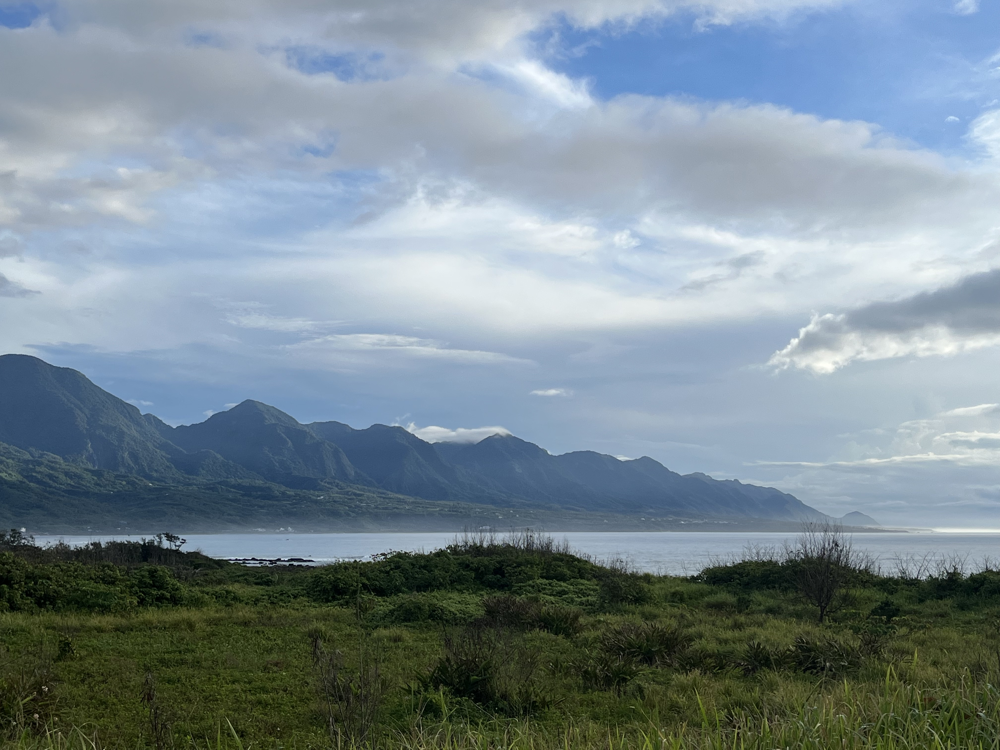
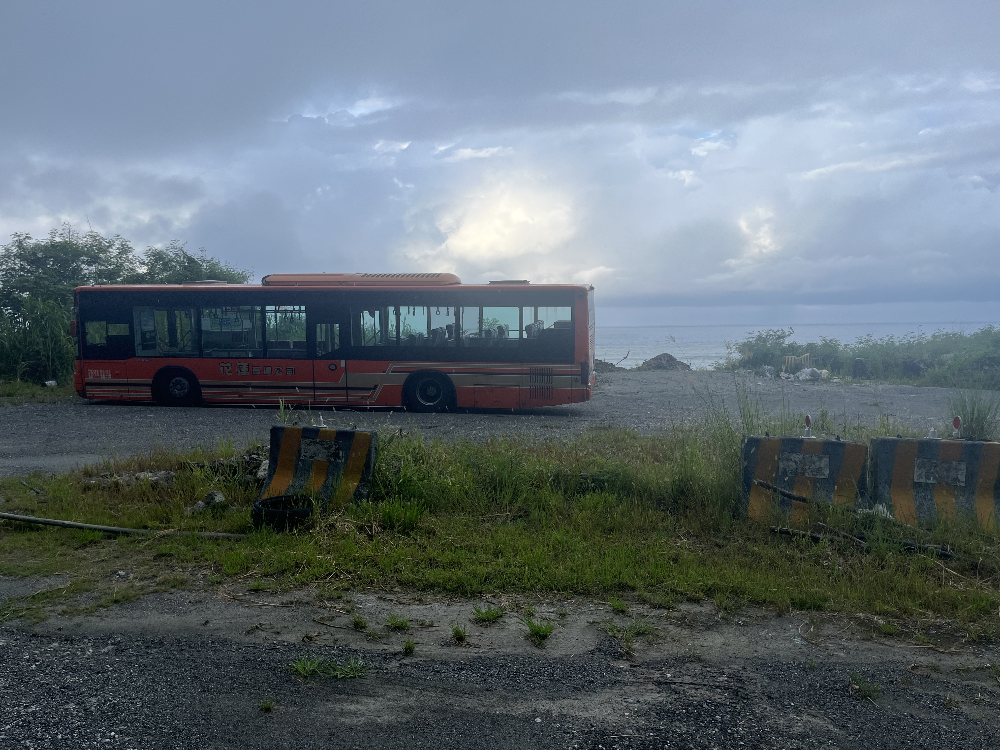

Bike Trip Days 2 and 3
June 10th 6:00 am
Hello again! The past few days were very eventful. I biked from Yuli to Taitung on the 8th (80km) and from Taitung to a homestay near Hualien yesterday (135km). I found these to be my most challenging 48 hour period in recent memory.
Yuli to Taitung: Physically, this day was the most punishing. Although I began riding by 8:30 the heat was nearly unbearable. I drank nearly two gallons of water within the first hour and was still thirsty. My muscles ached, my pace was glacial, and the self doubt that I wouldn't be able to finish started to creep in. Taitung felt unreachable. I simply wanted to find a shady spot, sleep, and magically wakeup in my air conditioned hotel.
In a way this is my favorite part about these long bike trips. Everything physically, but most of all mentally, is screaming that you cannot keep going, that surely the goal you have set for yourself is too ambitious, and you might as well just give up. But since you have to reach your destination and the only way to get there is through cycling, you keep peddling and somehow, someway, you always make it.

A big takeaway from this day was the importance of taking lots of breaks, having a defined plan, but also being willing to deviate from said plan. For example, since the first day I had a fantastic, rejuvenating lunch I wanted, and expected, this day would be similar. I had some vegetables, pineapple, and 飯館 (pickled vegetables wrapped in rice) in my bag that I picked up from a roadside 自助餐 (self-serve restaurant) and was hungry, but was waiting to eat until a parallel to day one's vegetarian feast appeared on the horizon. But that never came.
Normally, in this type of situation I keep pushing myself further and further to the point of pure exhaustion while fostering extreme feelings of self-resentment that I am forcing myself to continue in the hopes a desired state (in this case a vegetarian restaurant with tofu) appears. Realizing in this case, continuing risked heat stroke, I stopped in the parking lot of an abandoned Buddhist temple, cobbled together lunch, drank more water, and replenished my energy while a gecko greedily eyed my meal. It was hardly glorious, but it was sufficient and did the job.
Spirits restored, I began again. Fortunately, heavy rain soon began, which protected me from the heat for the next several hours. However, the rest of the ride was still extremely challenging, in many ways miserable, and I counted down each half kilometer demarcated by roadside signs until I limped into Taitung, very tired, a bit grouchy, heavily sunburned (despite reapplying every hour), so thankful to be done, and ready to unwind with a much needed shower.
My accommodations were a bed in a shared room. I did this because the thought of not having my own space made me uncomfortable so I wanted to see what that would feel like. I struggled to understand the host's directions to the shower, failed to find it, and left for dinner still caked in sweat from the ride and very frustrated with myself. I considered asking for an upgrade to a personal room so I could find the shower, but eating my 臭豆腐 (stinky tofu), I realized my inability to locate the shower, is not the problem of the hotel, it is the product of my own linguistic shortcomings. Rather than be angry at the world for inconveniencing me and not conforming to my expectations (as I used to do in these types of situations), I settled myself until the frustration passed, and asked the host again for directions to the bathroom. This time, with the assistance of photos. I understood how to get to the bathroom. I showered, cleaned the bathroom to not inconvenience the other travelers, and promptly fell asleep.
I didn't sleep well due to a mixture of jetlag, a rigid bed, and general tension I held from feeling obligated to consider the needs of the others in the room (wiping down the bathroom for example) over how I would normally unwind. I don't think I would care to be in a shared room again, but I am thankful I tried it.
Taitung to homestay near Hualien: Ultimately, poor sleep was a very fortunate thing because I woke up about 5am and decided to start riding ASAP. I left by 5:45 under the glow of an already risen sun, provisions from 7-11 in my panniers, and feeling much better than the previous day. Because I started earlier, the sun was mild so the ride was pleasant. Rather than push myself to exhaustion like previous days I took breaks when I started to feel tired. I hit my 70km goal for the day by noon and figured I might as well keep going. After lunch, I began again shielded from the sun by a kind mist which lasted the entire day. Once I hit 100km my legs began to ache, so I stopped near a fishing port, booked a hotel about 35km up the road by phone, and continued. I began to tired quickly after this and my pace slowed a lot. No problem, I felt great to just be going. Sure there were numerous times I wanted to quit, several moments I felt miserable that I was being rained on, sore, and still x km away from rest, but all the while there was an appreciation for the experience. Friendly people yelling 加油！(the equivalent to keep up the hard work) as they drove by as well as conversations with venders I bought water from buoyed my spirits. 
At one point I stopped to rest my legs and across the street was a group of people who appeared to be heckling me. I thought why not let's go try to speak with them. I asked if I could buy some green tea, which unfortunately they didn't have but instead they invited me to sit with them. We chatted for about half an hour about topics from my school, my home country, my bike trip, and the other typical questions that people have thus far broached with me. Looking at my temporary companions I noticed all but one were missing most of their teeth. Their teeth that remained were tarred black and a few had red, blood-like liquid coming out of their mouth. Since all except the man with all his teeth were chewing something, I figured that substance was the cause of their poor oral state.
The woman with the most red liquid offered me a shell wrapped in a leaf to eat, and once the man with teeth said don't eat it, I figured it was the hazardous consumable. My curiosity for them to give me its name so I could read about it later overpowered my traditional commitment to dental hygiene, so I bit down. It was extremely bitter, and I swallowed quickly, not wanting to taste further. My mouth became a bit numb and I thought this was equivalent to chewing tobacco. Not enjoyable, would not do again. I asked them to write down its name (in retrospect I could have done this without risking my teeth) and they did. We chatted a bit more, they wished me safe travels, and I was off. During my Chinese lesson that night, my teacher told me this was betal nut. Oops. Prolly shouldn't have eaten that. But I guess its a good story? lol.
The final part of the ride was a steep uphill, so steep I had to walk a decent portion. I felt so exhausted. Despite this only being 3km it took me nearly 45 min to reach the top of the hill. Thankfully a huge downhill awaited me. I zipped down ready to be at the hotel. To my chagrin, I overshot and the hotel was at the top of the hill! I had to trudge back, as the day turned to night, alongside a rather busy road and thought to myself, "I know I'm going to to make it but this is probably the closest I've come to death before." I felt extremely vulnerable and exposed to the whims of both the forest around me and the cars zooming past me. All the while, rain poured down while thunder crackled nearby.
I arrived at the homestay throughly shot, but also so proud of myself to have ridden so much and done so at the pace that felt comfortable. The hostess was amazing and made me a hearty dinner which restored my energy. I slept amazingly and am looking forward to finishing up today strong, but also very excited to be off a bike for a while. :)

Quick note – these post have been long! I think this is because I have nothing else to do in the mornings yet and they are excellent mechanisms for me to reflect on my experiences while getting to share them with family and friends. If you read this far, thanks! If not, I am still thankful because the idea that someone might be reading motivates me to keep these up and keep considering how I am feeling in this new place. Today I have a short 35 km ride to Hualien. Opposed to past days, I don't have expectations of how the ride will be – a welcome change.
-BJ